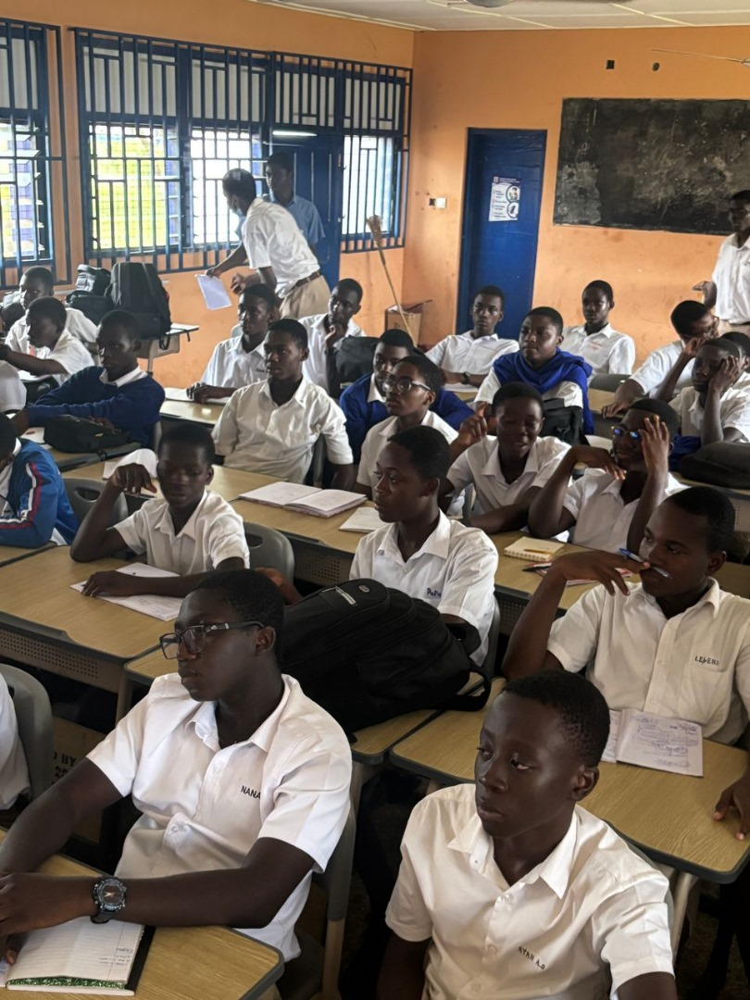
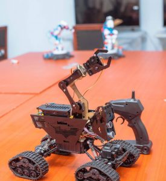

Welcome to the AI Lab!
Join us for an exciting glimpse into the world of robotics and artificial intelligence, powered by our talented students. Discover innovation in action.
About Our Club and Lab
Discover the foundation of our innovation and the environment where future leaders are shaped.
Our Robotics Club
Our Mission
We empower students to explore technology, develop critical problem-solving skills, and learn teamwork through hands-on robotics and AI projects. Our goal is to inspire the next generation of innovators.
Student Growth
Students gain invaluable experience in areas like advanced coding, data analysis, and ethical design, preparing them for future academic and career paths in STEM fields.
The AI Lab: A Hub of Innovation
Cutting-Edge Facilities
Our state-of-the-art AI Lab is equipped with high-performance computing resources, a diverse array of sensors , and industry-standard software platforms. These tools enable students to delve deep into machine learning, computer vision, and autonomous systems development.
Real-World Applications
Beyond theoretical learning, students apply AI concepts to practical challenges, building intelligent systems that can perceive, understand, and interact with complex environments. This hands-on approach bridges the gap between classroom knowledge and real-world technological solutions.
Today's Activities Schedule
Here’s a detailed look at what's planned for our open house today, from 2:00 PM to 3:30 PM.
Opening Prayer
Led by Stephen Ansah (Spiritual Advisor).
Purpose of Gathering
Presented by the MC and Co-MC.
Introduction of Club Members, Executives, and Patron
Introductions by the M.C.
Runthrough of Club Activities
Insights from the Club President.
A Word from Our Guests
Special addresses from Sir Benjamin Peprah and Uncle Yaw.
Popping of Champagne
A celebratory moment.
Vote of Thanks
Delivered by Arnold Asare.
Closing Prayer
Led by Bishop Peter Mba-Bacha.
Meet and Socialise
Networking opportunity with Co-MC Joshua Ogbu.
Media Coverage
Provided by H.E ADAM ASHRAF (GENERATIONAL WEALTH).